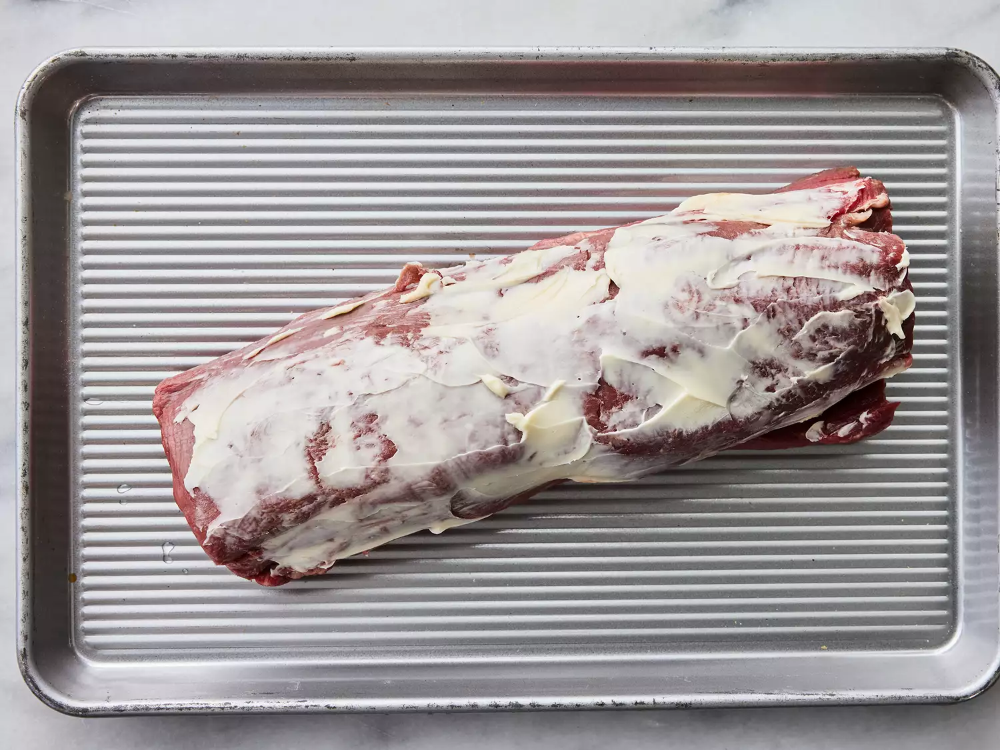

HOME

Beef Wellington is a
luxurious main dish made with beef tenderloin coated with paté and mushrooms, wrapped in puff pastry, and baked until the pastry is a beautiful golden brown. The classic English dish is named after Arthur Wellesley, 1st Duke of Wellington.
Ingredients
2 ½ pounds beef tenderloin
4 tablespoons butter, softened, divided
2 tablespoons butter
1 onion, chopped
½ cup sliced fresh mushrooms
Directions
Directions
- Step 1
Preheat the oven to 425 degrees F (220 degrees C).
- Step 2

Gather all ingredients.
- Step 3
Bake in the preheated oven until browned, 10 to 15 minutes. Remove beef from the pan and reserve pan juices; allow beef to cool completely.
- Step 4
Increase oven temperature to 450 degrees F (230 degrees C).